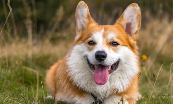
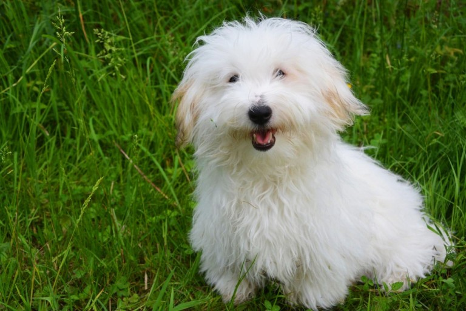
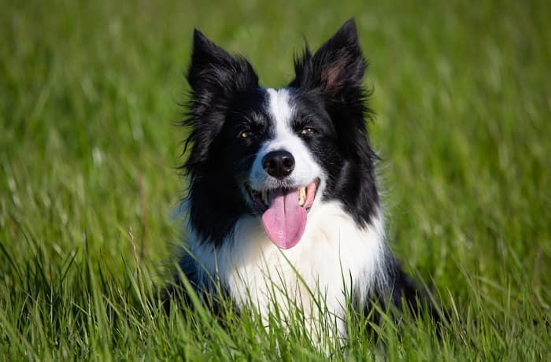

말티즈
말티즈는 밝고 사교적인 성격을 지니고 있으며, 애정이 많습니다.

푸들
푸들은 지능이 높고 활발한 성격을 지니고 있습니다.

포메라니안
포메라니안은 에너지가 넘치고 충성심이 강합니다.

골든리트리버
골든리트리버는 온화하고 인내심이 많아 가족과 함께하기 좋습니다.

도베르만
도베르만은 용맹하고 보호자에게 충실합니다.

요크셔테리어
요크셔테리어는 활기차고 호기심이 많으며 독립적입니다.

치와와
치와와는 작은 체구에 비해 용감하고 자신감이 넘칩니다.

비숑프리제
비숑프리제는 밝고 사랑스러운 성격을 지니고 있습니다.

웰시코기
활발하고 총명한 성격을 지니고 있습니다.

이탈리아 그레이 하운드
이탈리아 그레이 하운드는 빠르고 겁이 없는 성격을 지니고 있습니다.

꼬똥 드 툴레아
꼬똥 드 툴레아는 사교적이고 지적인 면모를 가지고 있습니다.

보더콜리
보더콜리는 지적이고 활동적인 성격을 가지며, 충실하고 끈질긴 성격을 지니고 있습니다.